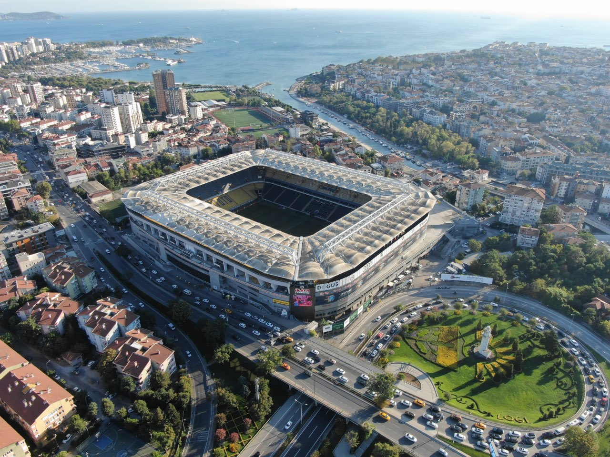
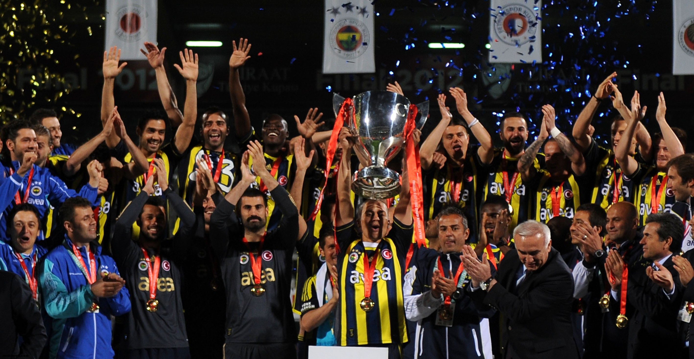

Fenerbahçe Spor Kulübü (Fenerbahçe Sports Club) are a Turkish professional football club based in Istanbul, Turkey. They are the men's football department of Fenerbahçe SK, a major professional multi-sport club. Fenerbahçe, known informally as Fener, are one of the most successful and best supported football teams in Turkey, having never been relegated, and currently compete in the Turkish Super League, the Turkish Cup and UEFA Europa League.
They are nicknamed Sarı Kanaryalar (Turkish for "Yellow Canaries") and play their home games at Şükrü Saracoğlu Stadium, their own traditional home ground in Kadıköy, Istanbul. The club's name translates as "Lighthouse in the Garden" and comes from the Fenerbahçe neighbourhood of the Kadıköy district in Istanbul.
Fenerbahçe have won 19 Turkish Super League titles, 6 Turkish Cups and 9 Turkish Super Cups, among others. With 28 League titles in total (19 Super League, 6 National Division, and 3 former Turkish Football Championship titles) Fenerbahçe hold the record for most national championship titles won. The club also lead the all-time table of the Turkish Super League.
In international club football, Fenerbahçe have won the Balkans Cup in 1968, which is marked as the first ever non-domestic trophy won by a Turkish football club. In UEFA competitions, Fenerbahçe have reached the quarter-finals in the 1963–64 UEFA Cup Winners' Cup and in the 2007–08 UEFA Champions League. The club's semi-final performance in the 2012–13 UEFA Europa League is marked as one of its greatest achievements in European competitions. Fenerbahçe are a member of the European Club Association.
 Source: Wikipedia